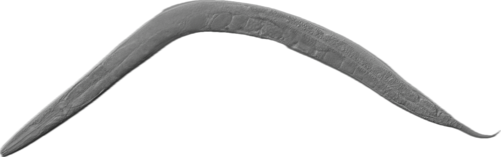

Interactive behavioural genetics
Gene Expression Simulation in C. elegans
This project is an interactive gene expression simulation for C. elegans, designed to explore how changes in gene expression affect behaviour. By manipulating expression levels of key genes, users can observe the impact on movement, feeding, and odour response.

Suggested path
Anatomy
Familiarise yourself with the basic anatomy of this essential model organism in neurobiology and developmental biology.
Explore the body plan → 02Behavioural genes
Understand the four genes you will be manipulating and how they balance excitatory and inhibitory signalling.
Read about the genes → 03Simulation
Dive into the simulation and experiment with gene expression. Already know C. elegans biology? Jump straight here.
Start simulating →Motivation
My motivation for this project is to explore my passion for neurobiology through the lens of technology. By integrating these fields, I aim to deepen my understanding while continuously discovering new aspects of this vast and evolving discipline.